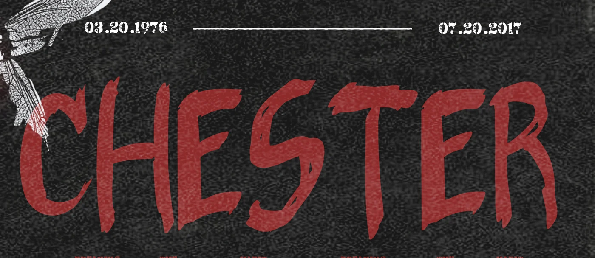
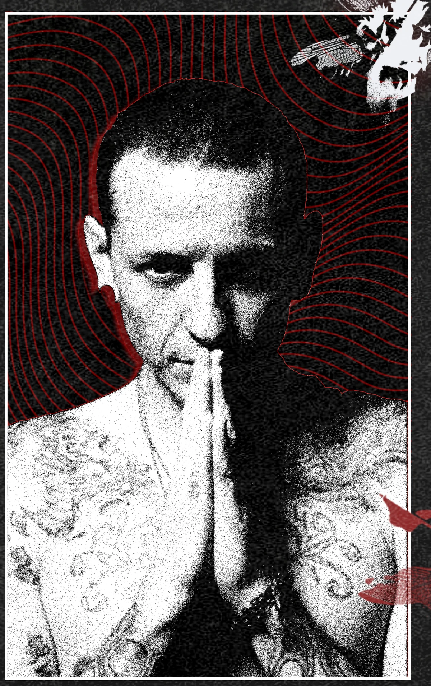
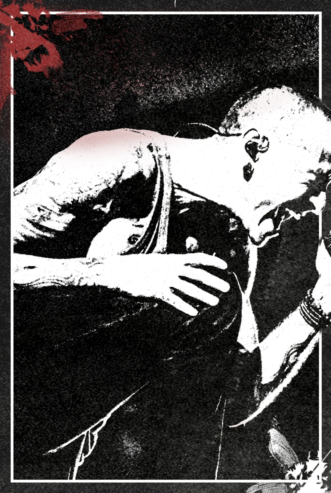
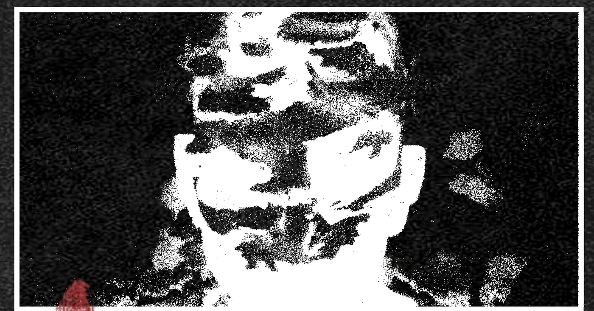
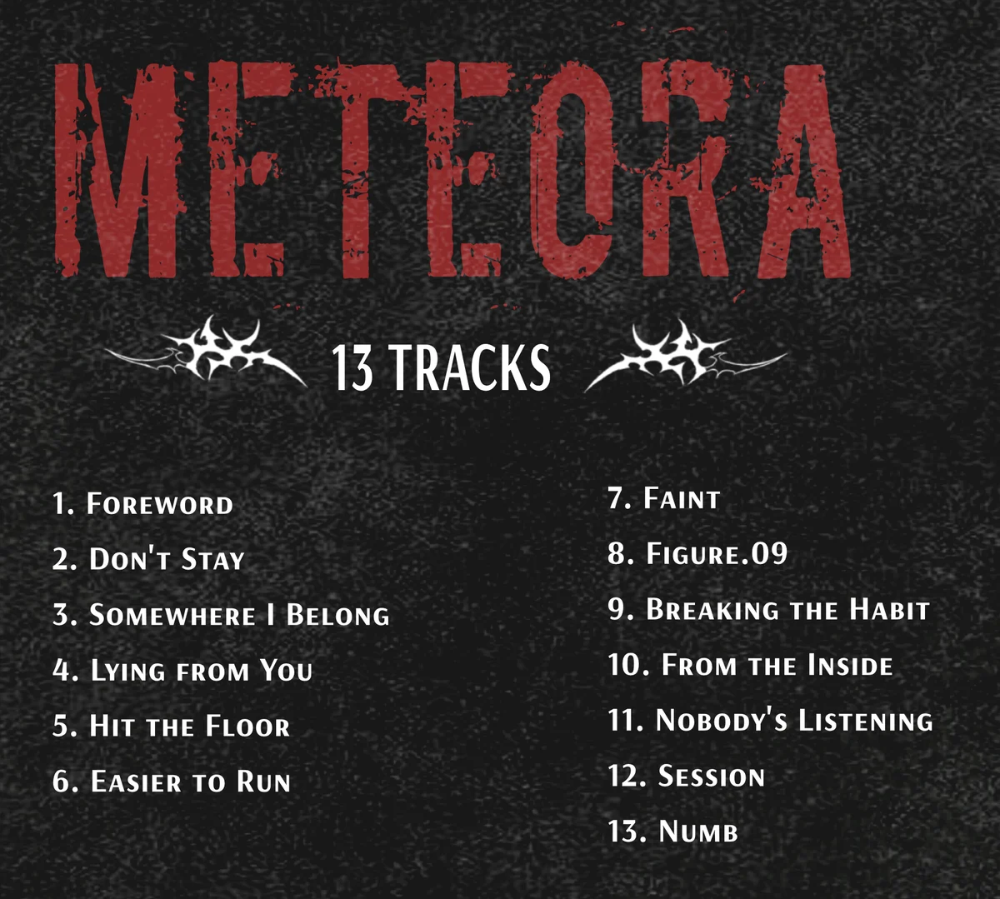

2026 · Visual · Poster
Chester 致敬海報 —— Meteora
A self-initiated poster about Chester Bennington and Linkin Park’s Meteora. The photographs are reference, not my own. I pushed them to high contrast and halftone so they would sit with the type, and kept the whole thing to red, black and off white. 2026 年 10 月的自主練習,主題是 Chester Bennington 和 Linkin Park 的 Meteora。照片是參考用的,不是我拍的。我把它們推到高對比和網點, 讓它們跟字搭得起來,整張只用紅、黑、灰白三個顏色。
- Type
- Visual design · Poster
- Year
- 2026
- Brief
- Self-initiated — 自主練習,非委託案
- Subject
- Chester Bennington · Meteora, released 25 March 2003
- Palette
- Red, black, off white

Type 字
CHESTER is set large enough to read before anything else on the poster. The two dates sit above it on a thin rule, kept small so they do not compete. CHESTER 放到最大,讓人第一眼先讀到名字。 上面那兩個日期壓在一條細線上,刻意做小,不跟名字搶。

Image 圖像處理
Three photographs, each treated differently. The portrait keeps its mid tones and sits over a red spiral. The small panel is pushed to pure black and white until the face breaks up. The live shot keeps the most detail, because on that one the motion is the point. 三張照片各自處理。人像保留中間調,底下壓一圈紅色螺旋。 中間那張推到只剩黑白兩階,臉會碎掉。現場照留最多細節,因為那張要的是動態。



Tracks 曲目
Thirteen tracks in two columns under the album title. 十三首曲目分兩欄,排在專輯名下面。

The photographs used here are reference material and belong to their photographers. This poster is a self-initiated exercise, not an official or commercial release, and is not for sale. 本作使用的照片屬於原攝影者。 這是自主練習,非官方或商業作品,不作販售。